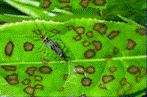
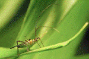

| Home |
| PEST OF TEA |
mAJOR pESTS |
| 1. Tea mosquito bug |
| 2. Mites |
| - Red spider mite |
| - Scarlet mite |
| - Purple mite |
| - Pink mite or orange mite |
| - Yellow mite |
| 3. Shot hole borer |
| 4. Sapling borer |
mINOR pESTS |
| 1. Flushworm |
| 2. Tea tortrix |
| 3. Tea leaf roller |
| 4. Scales |
| 5. Thrips |
| 6. Tea jassid |
| 7. Aphid |
| Questions |
| Download Notes |
TEA :: MAJOR PEST :: TEA MOSQUITO BUG
1. Tea mosquito bug: Helopeltis theivora (Miridae: Hemiptera)
Distribution and status: Serious pest of tea and widely distributed in Karnataka, Goa, Maharashtra and Tamil Nadu.
Host range: Cashew, neem, moringa and guava are other host plants.
Damage symptoms:

Adults and nymphs suck the sap from buds, young leaves and tender stems by puncturing with needle like stylets and injecting toxic saliva. These punctures appear as reddish brown water soaked spots. Later they coalesce together to form necrosis. Due to intensive feeding, leaves curl up, become badly deformed and remain small. Gradually, shoots dry up.
Bionomics :
Adult is black with red thorax, black and white abdomen and greenish brown wings. Body is small, slender with long antennae. An erect knobbed process on the scutellum is characteristic of the species. Bugs are active in the early morning and late evening hours and hide in the bushes during the remaining period. White eggs with two filaments arising from the operculum are inserted into tender shoot. Egg period 5-7 days, nymphs greenish yellow, nymphal period 10 days with five nymphal instars.
Management
- Collect and destroy the damaged plant parts
- Spray any of the insecticides , profenofos 50 EC 800-1000 ml, Thiamethoxam 25 WG 100 g, endosulfan or phosalone or chlorpyriphos or dimethoate at 1000ml/ha with 500 L water/ha
- Spray in early morning or late in the evening hours on trunks, branches, foliage and inflorescence for effective control.